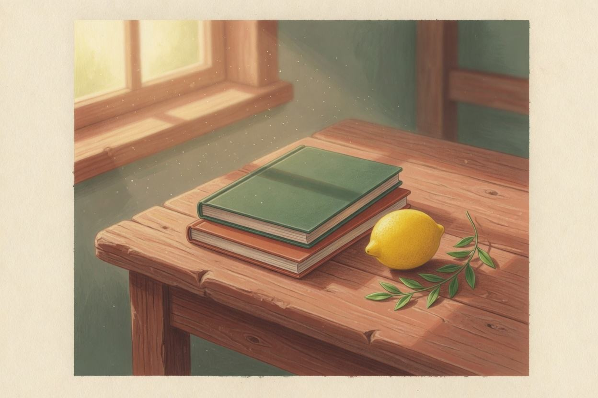

Animals, adventures & big questions
Big questions.
Little paws.
Join Charlotte as she meets animals and the people who care for them—from the barn to the zoo to her own home.
Stories
Charlotte’s first stories follow horses at the barn, a baby elephant at the National Zoo, and three puppies at home.

Illustrative artwork.
Horse training
Meet horse trainer Martha Wunder
Charlotte is talking with Martha Wunder about working with horses. The story includes her visit to check on Crispy.
Story in progress
Read the story
Illustrative artwork.
The zoo
A baby elephant at the National Zoo
Charlotte visited the National Zoo to see a baby elephant and learn about the people who care for the animals.
Story in progress
Read the story
Illustrative artwork.
At home
Meet the puppies
Three very young puppies at home, growing and playing as they discover what is around them.
Story in progress
Read the story
Meet Charlotte
Hi, I’m Charlotte. I love animals and I love asking questions.
She wants to meet veterinarians, trainers, and other animal experts, and to share the animals she meets along the way.
About Charlotte
Also in Charlotte’s life
The Lemonade Society
Charlotte and Hendrik are co-founders and mini co-CEOs of The Lemonade Society in the Washington, DC area. It is part of The LiTEArary Society, Inc., and it supports a lifelong love of books among preschool-aged children in disadvantaged communities.
The Lemonade Society